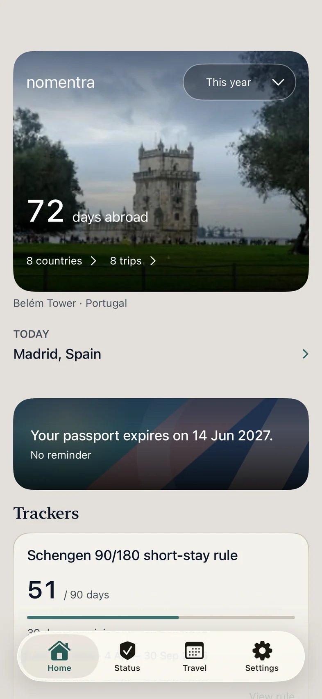
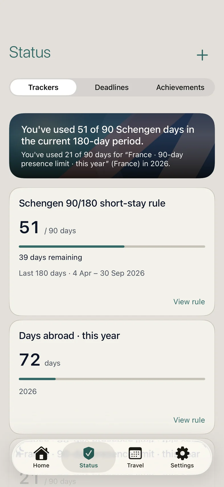
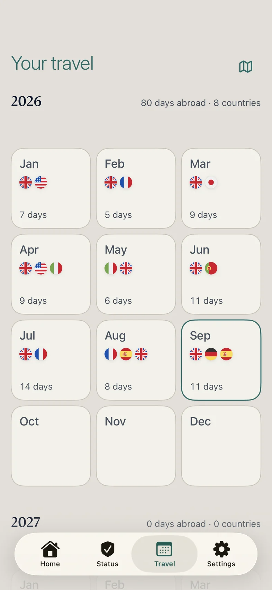
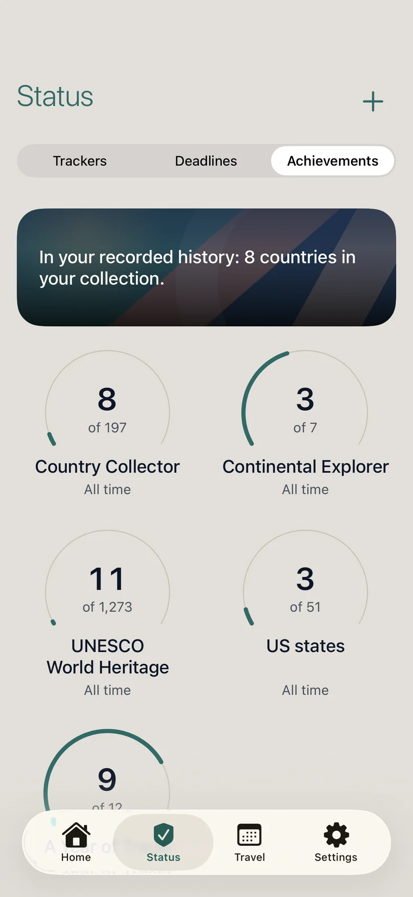
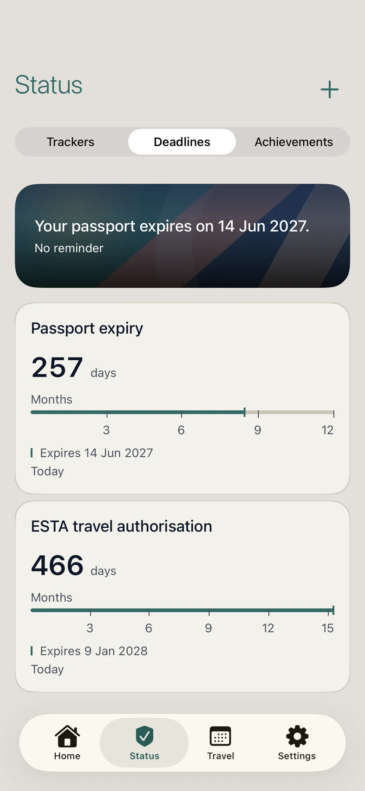
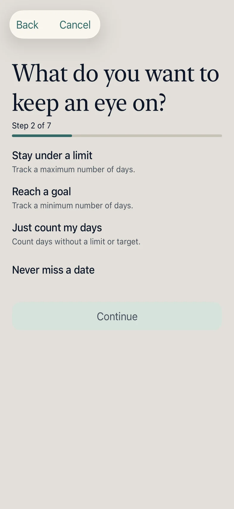

For iPhone
Know where you’ve been.
Nomentra builds your travel history from your photos and your iPhone’s location, helping you count days, keep track of deadlines and collect the places you visit.



-
Your past travel, rebuilt for you
Build your past travel from the dates and locations in your photos. Scan new photos when you choose, and let your iPhone add location as you travel, with your permission.
-
Know where you stand
Choose from preset trackers for visa, tax and immigration rules. See how many days you have used and how many remain, counted from your real history instead of from memory.
-
A tracker for your own rules
Residency days, a tax year, work days abroad, time in a US state. Build a tracker for the rule that matters to you: stay under a limit, reach a goal, or simply count.
-
See what counts
See the dates behind your day counts, correct your travel record and update the affected totals.
-
Dates you can’t afford to miss
Passport and visa expiry dates sit beside your trackers, with reminders when you want them.
-
Your world, collected
Collect countries, continents, capitals and US states, and mark the UNESCO World Heritage sites you’ve visited.



Private, and yours
Your travel record is stored on your iPhone, with no account. Correct it, export a readable copy or delete it whenever you choose.
Coming to iPhone
Nomentra is not yet on the App Store. It will need iOS 26 or later.
Nomentra helps you keep a record of your travel. It is not legal, tax or immigration advice.